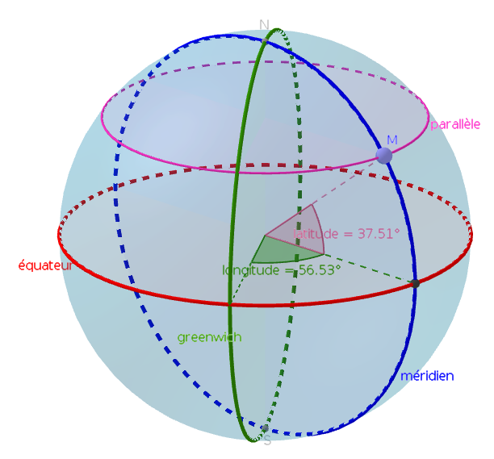

Thème 2 : Localisation et cartographie⚓︎
1. Coordonnées géographiques⚓︎
1.1 Se repérer à la surface de la Terre⚓︎
Tout point de la Terre se situe à l'intersection de deux cercles: un parallèle (à l'Équateur) et un méridien (cercle passant par les pôles).

Ces cercles forment des angles par rapport au centre de la Terre : la latitude et la longitude. Ces angles sont les coordonnées géographiques (ou GPS par abus de langage) de ce point.
Pour comprendre leur utilisation, allez à l'activité 1 :
 Activité 1 : villes du monde
Activité 1 : villes du monde1.2 Différentes conventions d'écriture d'angles⚓︎
Les angles se mesurent en degrés, soit au format décimal (avec en général au moins 6 chiffres après la virgule) ou bien en subdivisions de degrés: la minute d'arc qui vaut 1/60 de degré et la seconde d'arc qui vaut 1/60 de minute.
Pour un même lieu, il y a donc plusieurs formats d'écriture de ses coordonnées. Les deux principaux sont:
- Degrés, minutes, secondes (DMS): par exemple 45° 26' 14'' N , 12° 20' 5'' E
- Degrés décimaux (DD): par exemple 45.4372222, 12.3347222
Quelques exemples
| Paris | New-York | Rio de Janeiro | Sydney | |
|---|---|---|---|---|
| DMS | 48°51'24.11" N, 2°21'5.26" E | 40°42'45.2" N, 74°0'21.65" O | 22°54'39.6" S, 43°12'33.84" O | 33°51'22" S, 151°11'33" E |
| DD | 48.856697, 2.351461 | 40.704222, -74.006014 | -22.911 , -43.2094 | -33.8561, 151.1925 |
On peut retrouver ces coordonnées dans l'url de Google Maps lors d'une navigation :
Conversions
Prenons par exemple la latitude de Paris. On obtient en degrés \(48+\dfrac{51}{60}+\dfrac{24.11}{3600} = 48.856697\)
On compte positivement car la position par rapport à l'Équateur est N pour Nord (on compte négativement pour une position S pour Sud, comme Rio ou Sydney).
Prenons par exemple la longitude de New-York. On obtient en degrés \(74+\dfrac{0}{60}+\dfrac{21.65}{3600} = 74.006014\)
On compte négativement car la position par rapport au méridien de Greenwich est O pour Ouest (on compte positivement pour une position E pour Est, comme Paris ou Sydney).
Prenons par exemple la latitude de Rio de Janeiro : -22.911
- Le signe moins indique que la position est S
- La partie entière donne les degrés : 22
- On multiplie la partie décimale par 60 : \(0.911 \times 60=54.66\) dont la partie entière donne les minutes : 54
- On recommence avec la partie décimale du précédent pour obtenir les secondes : \(0.66 \times 60=39.6\)
On obtient donc en DMS 22°54'39.6" S.
Rappel : il existe des sites qui proposent de manipuler très facilement des coordonnées GPS, comme https://www.coordonnees-gps.fr/ par exemple.
2. GPS⚓︎
2.1 Fonctionnement⚓︎
2.2 Questions⚓︎

Fonctionnement du GPS
-
Pour indiquer sa position à l’utilisateur, un smartphone envoie-t-il une demande au réseau, à un central, à un satellite ou n'envoie-t-il rien du tout ?
-
Que reçoit-il d’un satellite ?
-
Comment calcule-t-il sa distance avec un satellite ?
-
Quel matériel embarqué sur le satellite assure la précision de la mesure du temps ?
-
Où sont situés, géométriquement, tous les points à la même distance d’un satellite ?
-
Quelle est l’intersection de deux sphères ? De trois sphères ?
-
Combien de satellites au minimum le smartphone doit-il capter ?
-
Quel est le rôle du dernier satellite nécessaire ?
Intersection de 3 sphères :
Exercice de calcul de distance
Supposons que le signal d'un satellite S ait mis 0,071 secondes à me parvenir.
À quelle distance du satellite S suis-je ?
On considèrera que le signal envoyé par le satellite a une vitesse de 300 000 km/s
Application smartphone
L'application Satstat permet de repérer les satellites en communication avec le smartphone et d'obtenir des informations complètes de localisation.
3. Services de cartographie⚓︎
Géoportail est un site public français permettant l’accès à des données géographiques ou géolocalisées. L’utilisateur peut superposer sur un fond de carte (carte de l’Institut national de l’information géographique et forestière, photographie aérienne, carte du relief) différents couches de données(carte des transports, emplacement des hôpitaux, départements, etc...) de manière à créer une carte numérique personnalisée. Géoportail permet aussi la localisation, le calcul de distances, de surfaces et d’itinéraires.
OpenStreetMap est un service de cartographie libre et collaboratif qui permet de visualiser, de modifier et d’utiliser des données géographiques. Il propose également le calcul d’itinéraire. Chacun peut contribuer à OpenStreetaMap en ajoutant des informations manquantes on en corrigeant des erreurs.
4. L'apport du numérique dans la cartographie : l'optimisation d'itinéraires⚓︎
Une des conséquences les plus spectaculaires de l'apport du numérique dans la cartographie est le calcul du meilleur itinéraire pour aller d'un point à un autre.
Ce qu'on appelle communément le «guidage GPS» combine à la fois le repérage de l'utilisateur (grâce à une puce GPS), une connaissance cartographique des différents chemins (grâce à la cartographie numérique), ainsi que des calculs mathématiques d'optimisation, effectués par le processeur (du smartphone, de l'ordinateur de bord de la voiture, ...)